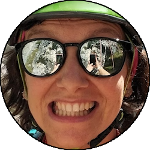
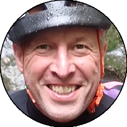
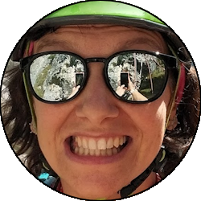
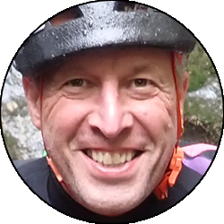

Relazione
| Data Uscita | 23-09-2023, Sabato | Area | Valbona-Sornadello |
|---|---|---|---|
| Luogo di Partenza | Carubbo - Zogno (BG) | Quota |
570m la partenza 560m l'ingresso della forra 400m (circa) l'uscita della forra |
| Dislivello | 50m (circa) | Tempi | 02:30 ore (02:00 ore il canyon) |
| Esposizione | Sud | Difficoltà Tecnica | V4A2 |
| Vie di Fuga | Un po' ovunque lungo le sponde | Bacino Pluviale, Prese d'Acqua o Condotte | 1,5km² |
| Partecipanti |
Elda,
 Henry, Henry,
 Oracolo,
 Silvia S,
 Tiziano, Oracolo,
 Silvia S,
 Tiziano,
 Walterone Walterone
|
||
(clicca sull'immagine per scarica la traccia GPS)
Accesso
Da Lecco andare in direzione Bergamo fino a villa d'Almè, dove si imbocca la val Brembana. Oltrepassato il viadotto di Sedrina e la galleria in prossimità delle Grotte delle Meraviglie, proseguire per circa 1 km; superare la chiesetta sulla sinistra e imboccare sempre sulla sinistra via al Boer. Proseguire fino a prendere via San Bernardino a destra, e poi prendere la seconda deviazione a sinistra su una strada in salita, che si segue fino a prendere a sinistra dopo due tornanti, a un parcheggio comodo sopra la statale. Per la navetta: tornare in paese, proseguire fino al curvone di Zogno ed imboccare via Roma; proseguire diritti all'interno del paese; terminata la strettoia svoltare a sinistra in via Umberto I, in direzione della frazione Carubbo; oltrepassare il cimitero e proseguire per 2,5-3,0 km fino alla deviazione a sinistra che porta al borgo di Carubbo. Arrivati al termine della strada incontrerete un box in lamiera; parcheggiare la navetta. Se non trovate posto ritornare indietro fino a raggiungere il grande spazio sulla curva e parcheggiare lì.